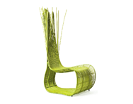

Crafter Biography: Tala

My Story:
At the age of 18, Tala is already a master of weaving natural fibers in to one of a kind furniture pieces. She enjoys creating colorful patterns with her close knit Aeta community. Taught by her lola (grandmother) this is a tradition passed on from a long line of ancestors. This intricate art is her creative outlet and at the same time her only means of livelihood.She hopes to gain enough to one day achieve her dreams of being an interior design.
Aeta Tribe:
The Aeta live in the northern part of the Philippines on the island of Luzon. Historians and anthropologists debate precisely when and how they migrated here, the consensus being that they crossed from the island of Borneo between 20 and 30 thousand years ago, using a land bridge that was partially covered by water around 5,000 years ago — the remaining part of which is now the island of Palawan. Whatever the migration path was, they are without doubt among the first — if not the first — inhabitants of the Philippines. One area of that country where the Aetas had lived for thousands of years was Mount Pinatubo. An active volcano, it erupted in June of 1991. The eruption was one of the worst in history and was devastating to the nearby Aeta population. Around a quarter million people lost their home — many of them Aetas. Although the Filipinos are still cleaning up the ash to this day, the Aetas have long since re-settled in urban areas of Luzon. It is doubtful they will ever return to their former homeland.